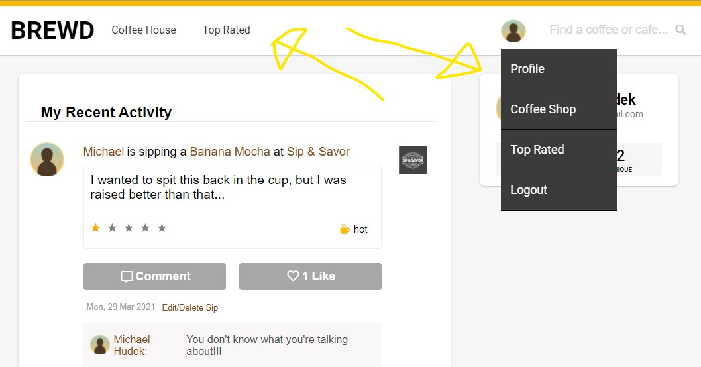
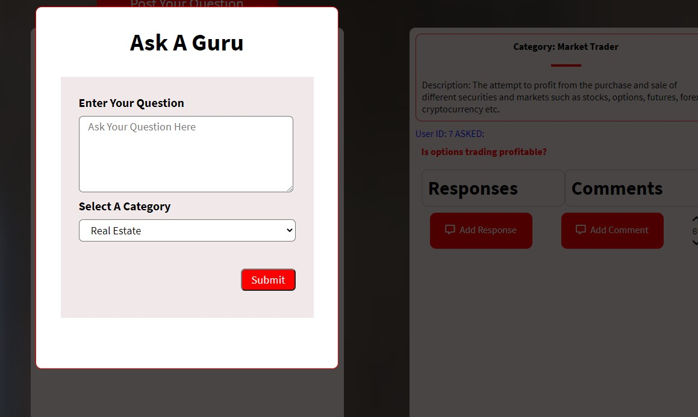

Projects
My Paired, Group and Solo Projects
First Group Project done in Express and Sequelize and this is my Salt Counter Feature

Second Group Proejct done in React and Flask and those are the NavBar and DropDown Menu features I implemented

My Solo Full-Stack Project done in React and Flask with my most favorite feature a "Post a Question" feature
My first group project was done with PUG, Express and Sequalize. It was a clone of the popular journal-media site Medium, only ours was named Sodium
and was structured more like the famous satirical site, The Onion. The main feature I worked on and completed
successfully was the salt feature akin to the like button in facebook though my feature actually counted all user "Salts" and was Sessions
sensitive meaning thah for example if you were the one signed into my site and you "salted" an article for the first time the count would
get raised by one but if you, the same user, tried to salt that article again the salt count would go down by one eliminating any possibility of
multiple likes on the same article from the same user.
My second group project I worked on a React / Flask / SQLAlchemy project. It was a clone of the popular Geosocial Beer Rating App known as Untappd.
Our site was actually focused on local coffee's rather than beer. The main feature I worked on was the NavBar and the Dropdown Menu from the User
Profile logo. I completed this using GET request to the various pages listed in the dropdown combined with the Javascript Map method.
My last project was a solo full-stack project done in React / Flask / SQLAlchemy. It was an original site made for aspiring entrepreneurs. They could
signup to my site and then post a question in one of ten entrepreneurial categories available on the site for now. They are all categories I have either built
or attempted to build businesses in myself. Now experienced entrepreneurs who have joined my site can check the different questions posted and if they have a
certification badge in that category, are allowed to post a response to the user. Think of it like Stack Overflow, but for aspiring entrepreneurs. Regular users can comment on the quesitons posted by other users, but because
they have no previous or very little experience in the categoy, their comments are subject to community upvotes and downvotes. My proudest feature on that project
was being able to post a question on the site using a modal. I had a hard time importing the category table but I knew I had to include the category name on each
question asked or how else would a mentor know what category of entrepreneurship the question was being asked to know if they have the relevant skills and experience to
be able to answer the user's question. I even though all my relationships in the model were correct and I used the to-dict method which is common for python/flask. I
ended up having to make a static method from the quesitons table and the categories table in order to pull the data from the database. I made a joins table between the questions
database and the category table and then I was able to include all the data from each table in the static method that I creaed allowing me to pull the exact information I needed
from each database to formulate the proper "Ask A Question" feature. It was a simple matter of querying for the info correctly and WALA! You pull the category ID from the database.
These are a few of the things I've worked on that has helped hone my skills as a full-stack software engineer.